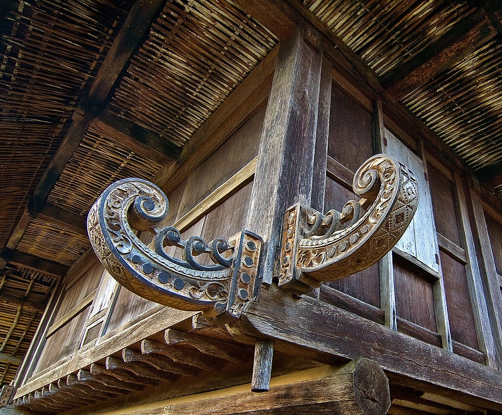
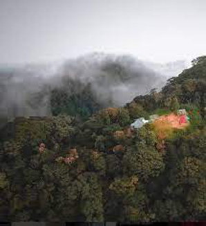

LAMBAN PESAGI
Arsitektur vernakular kayu masyarakat adat Sai Batin. Rumah panggung tahan gempa berusia ratusan tahun yang berdiri kokoh tanpa paku pabrikan.
Rumah Persegi Penjaga Riwayat Sekala Brak
Secara etimologi, Lamban bermakna rumah dan Pesagi bermakna persegi atau presisi, merujuk pada denah bujur sangkar simetris yang menjadi identitas arsitekturnya.
Terletak di Pekon Kenali, Belalau, Lamban Pesagi berdiri di kawasan dataran tinggi lingkar Gunung Pesagi (2.262 mdpl), pusat persebaran peradaban Kerajaan Sekala Brak kuno dan titik awal silsilah masyarakat Lampung.
Dihuni oleh masyarakat adat Sai Batin, bangunan panggung ini menjadi bukti keandalan rekayasa vernakular Nusantara yang terbukti utuh melewati gempa tektonik Liwa pada tahun 1994.

Anatomi Tiga Lapisan
Pembagian struktur vertikal dengan rasio proporsi tinggi-lebar 1:2 hingga 1:6.
Memuat data arsitektur...
...
Konstruksi Tanpa Paku
Lima teknik sambungan kayu knock-down yang menyerap energi gempa bumi melalui elastisitas alami material.
Tanggam-Purus
Memuat deskripsi teknik...
Denah & Stratifikasi Ruang
Enam zona privasi dan hierarki fungsi ruang masyarakat Sai Batin.
Artefak Tradisional Pendukung
Kawasan Sekitar & Aksesibilitas
Lanskap pegunungan dan jalur transportasi menuju Pekon Kenali.
Tata Krama Bertamu & Direktori Kunjungan
Protokol adat Sai Batin dan petunjuk praktis untuk kunjungan penelitian, studi arsitektur, maupun pelancong budaya.